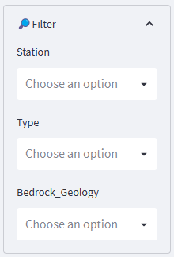
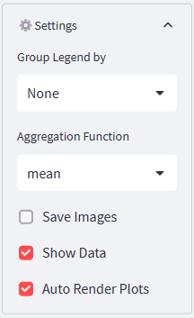
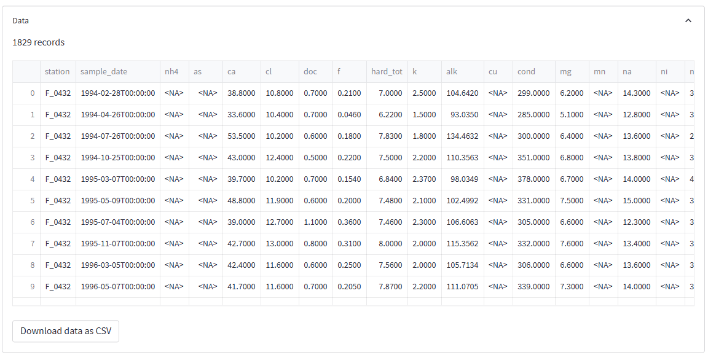

Introduction
Fontus currently allows to create Piper diagrams and maps. The plot type is selected in the sidebar menu. However, these plots type only appear in the plots selection list if the uploaded data contains the required fields and these fields have been correctly mapped to the respective system parameters. Note that each plot output window consists of a tabbed widget consisting of the tabs Plot Settings and Show Plot. Plot settings allow you to specify all plot properties, and Show Plot holds the generated graphic. For most plots, filters can be set on fields specified as lookup parameters in the Data menu.
Common Features
Toolbar
The following icons appear on the right side of most plots and allow the user to interact with the figures.
Most plots are created using the python graphic libary Bokeh. This icon links to the Bokeh home page.
This icon allows the user to pan. If panning is active a blue bar appears on the left of the icon.
The box zoom allows to zoom into a box within the plot. If box zoom is active, a blue bar appears on the left of the icon. Zooming can be very helpful to identify points in a plot having closely clustered or overlapping markers.
The wheel zoom icon allows the user to zoom in and out in the plot, using the mouse wheel. If wheel zoom is active, a blue bar appears on the left of the icon.
This icons resets the original settings and undoes any previous zooming and panning.
Provides Bokeh help.
Activates the display of a tooltip info box when hovering over a point. If tooltip display is active, a blue bar appears on the left of the icon.
Sidebar Options
The sidebar menu allows to change the plot type using the topmost selectbox widget but also holds two additional sections alowing the user to interact with the plot.
🔎Filter: In this box, all fields marked as lookup fields appear as multi-selectboxes. If the user select one or several items from one of the selectboxes, the data is filtered to only include samples, matching this filter.

⚙️Settings: The sidebar settings include additional settings, which Fontus makes more easily available as they are commonly and often changed during an analysis and because it is helpful to be able to inspect the result instantly, without switching between the Settings and Show Plot tabs.

The Group Legend by option defines the parameter for which each distinct value will be shown with a different symbol on the plot. The list of available parameters includes all parameters marked as lookup fields.
Suppose the user selects a function from the Aggregation Function list box. In that case, all samples belonging to the same legend symbol (having the same value for the parameter selected in the Group Legend by list) will be aggregated to a single symbol in the plot. This feature allows summarizing data when there are too many points to show on a single plot. For maps, aggregation is mandatory since all samples from the same station perfectly overlap, so showing multiple symbols per station does not add value to the plot and results in confusing tooltip boxes.
Save Images If the user selects this option, all plots are saved to a file ready for download at the same time that they render on the screen. When active, a download button is shown allowing to download these files.
Show Data: When this option is active, the data used to generate the current plot is shown in a collapsable box below the plot. Hiding the box can be advantageous for keeping the output area uncluttered if the analyst down not require the data in a grid format and also saves time when generating the output. When active, Fontus renders the data table in a collapsable box, and the user may use the icon to open or close the box. Below the grid holding the plot data, a download button allows downloading the data.
